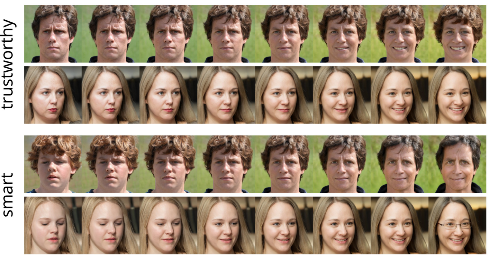
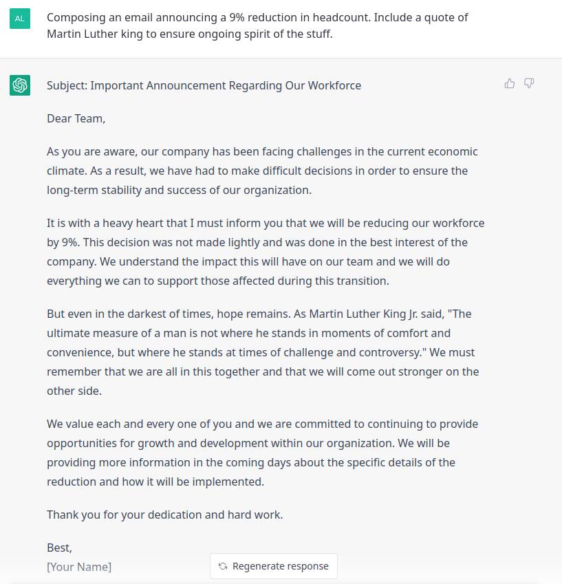
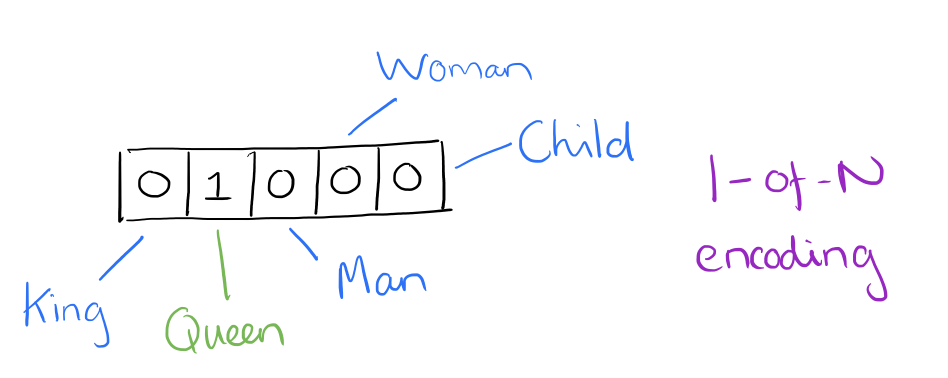
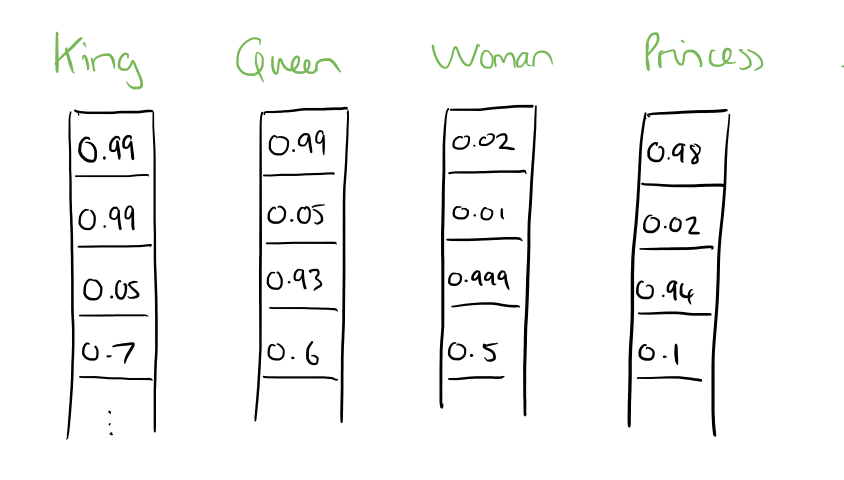
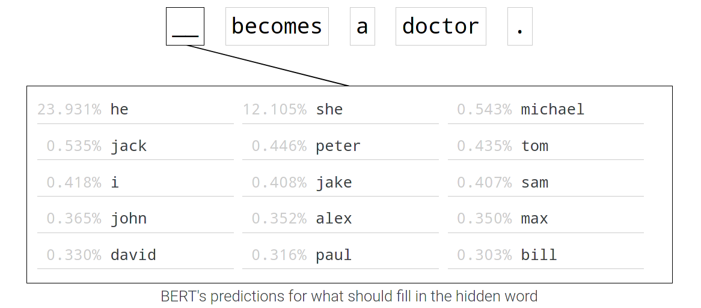
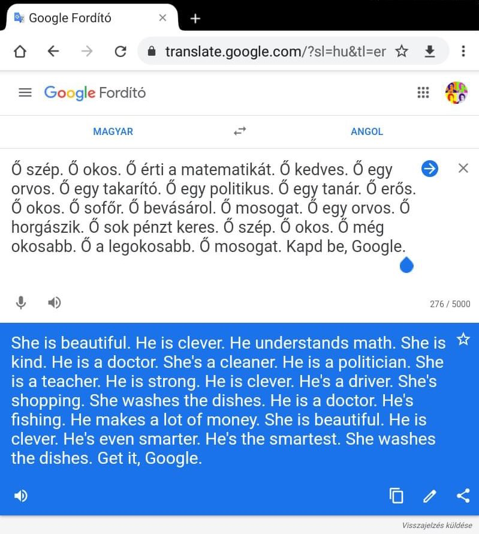
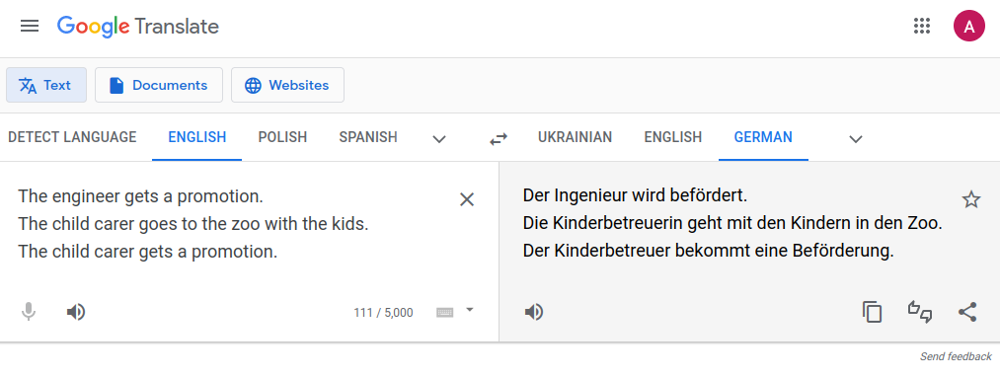

The ABC of Computational Text Analysis
#8 Ethics and the Evolution of NLP
Recap last Lecture
- assignment 2 accomplished :white_check_mark:
- an abundance of data sources
- JSTOR, Nexis, few datasets
- creating your own dataset
- convert any data to
.txt
- convert any data to
- processing a batch of files
- perform tasks in for-loop
- Assignment
- posititv: gut gelöst, für manche Leute sehr viel einfacher, für manche schwieriger
- Tradeoff: generalisierung vs. spezifizität
- Kunst ist: so generell wie möglich, so spezifisch wie nötig
- interessante Quellen für Sozialwissenschaften
- Unmenge intressanter Daten, wenig Datensätze
- Konversion, da Dokument nicht in maschinenlesbarer Form
- gerüstet um mit (fast) allen Textdaten zu arbeiten
Outline
- ethics is everywhere :see_no_evil::hear_no_evil::speak_no_evil:
- … and your responsibility
- understand the development of modern NLP :rocket:
- … or how to put words into computers
- heute ein Sprung, der über praktischen Teil von Seminar hinausgeht
- Mix aus Ethik und Entwicklung NLP
- moderne NLP leistungsfähiger als je zuvor, aber mit Problemen
- AI ist Werkzeug, erstmal weder gut noch schlecht
- Vergleich: Motor für Krankenwagen oder Panzer (Verteidigung/Angriff).
- Internet für Wikipedia oder für Kinderpornographie
- Die Frage ist: Wer profitiert genau von was? Wer verliert dabei?
Ethics is more than philosophy.
It is everywhere.
An Example
You are applying for a job at a big company.
- Ethik ist nicht nur abstrakt und gehört nicht nur in Philosophie
- nicht Begriff ist wichtig, sondern Denkart
- nachdenken über Ausgangslage + Konsequenzen
- Anekdoten aus eigenem Bewerbungsprozess
- als Bewerber
- für Jobs, die Tools zur automatischen CV-Verarbeitung machen
Does your CV pass the automatic pre-filtering?
:red_circle: :green_circle:
:thinking: For what reasons?
- automatische Vorselektion Bewerbungen
- bestenfalls: naiv, schlechtensfalls: anti-liberal/diskriminierend
Your interview is recorded. :sunglasses: :hot_face:
What personal traits are inferred from that?
:thinking: Is it a good reflection of your personality?

Don’t worry about the future …
… worry about the present.
- AI is persuasive in everyday’s life
- assessing risks and performances (credits, job, crimes, terrorism etc.)
- AI is extremely capable
- AI is not so smart and often poorly evaluated
:bulb: What is going on behind the scene?
- je mehr die Systeme können, desto mehr werden sie eingesetzt, desto unsichtbarer wird, was sie nicht können
- Moderne AI lernt Muster aus Daten. Gilt auch für NLP.
- generalisiert blind oder eben genau so wie gelernt
- Ungleichheit wird reproduziert, gar verstärkt durch Systematik
- Geschlecht, Ethnie, sozioökonomisch
- Problematik ist Reichweite und Intransparenz
- Menschen auch fallibel, aber mit grösser Varietät
- Anwendungen für tabelarische Daten, Text, Bild, Video
- self-driving cars (walking pedestrians vs wheel chair pedestrians)
- Entwicklung NLP und Ethik hängen zusammen
- quasi: je leistungsfähiger NLP, desto mehr Bias wird mitgelernt im aktuellen Paradigma
- besseres Verständnis = bessere Data Science
Algorithmic Managment of Labour Force

- Akkordarbeit und bei ungenügender Leistung automatische Entlassung?
An (R)evolution of NLP
From Bag of Words to Embeddings
Putting Words into Computers [@Smith2020; @Church2021]
- from coarse, static to fine, contextual meaning
- how to measure similarity of words
- string-based
- syntactic (e.g., part-of-speech)
- semantic (e.g., animate)
- embedding as abstract representations
- from counting to learning representations
- Ein Sprung, wie diese Technologie gewachsen ist
- Probleme
- Bank kann Kreditinstitut bedeuten, in anderem Satz Parkbank
- Haus und Gebäude sehr ähnlich, aber nicht reflektiert in Oberflächenform
- Syntax und Semantik um Wörter zu gruppieren
Bag of Words
- word as arbitrary, discrete numbers
King = 1, Queen = 2, Man = 3, Woman = 4
- intrinsic meaning
- how are these words similar?

- Vektorrepräsentation für ganzes Vokubular
- jedes Wort ist anderes als jedes andere, in unvergleichbarer Weise
- BoW lange Zeit Standard. Ergänzt durch zusätzliche Information wie POS
Representing a Corpus
Collection of Documents
NLP is great. I love NLP.I understand NLP.NLP, NLP, NLP.
Document Term Matrix
NLP |
I |
is |
term | |
|---|---|---|---|---|
| Doc 1 | 2 | 1 | 1 | … |
| Doc 2 | 1 | 1 | 0 | … |
| Doc 3 | 3 | 0 | 0 | … |
| Doc ID | … | … | … | term frequency |
- für den Computer müssen Daten tabularisiert werden für weitere Verarbeitung
“I eat a hot ___ for lunch.”
- Wörter können aber auch anders definiert werden und das will ich hier illustrieren
- Frage an Studis
You shall know a word by the company it keeps!
@Firth1957
- kontextuelle Bedeutung statt intrinschische Definition
- Saussure: Zeichen nur definiert durch andere Zeichen
- relationale Bedeutung: Objekt ist definiert durch Kontext
- lange ohne technische Implementation
Word Embeddings
word2vec [@Mikolov2013]
- words as continuous vectors
- accounting for similarity between words
- semantic similarity
King – Man + Woman = QueenFrance / Paris = Switzerland / Bern



- Seit 2013 hat sich alles verändert
- vector = list of numbers -> point in Euclidean space
- Idee: wenn Wort genau gleich gebraucht wird, dann selbe Stelle
- Synonyme, Analogien finden
- alles noch globale Information. Ein Wort hat genau ein Vektor
- Was passiert mit mehrdeutigen Wörter (z.B. Bank)?
- Frage wie diese Repräsentationen genau gelernt wir nach Pause
Contextualized Word Embeddings
BERT [@Devlin2019]
- recontextualize static word embedding
- different embeddings in different contexts
- accounting for ambiguity (e.g.,
bank)
- acquire linguistic knowledge from language models (LM)
- LM predict next/missing word
- pre-trained on massive data (> 300 billions words)
:boom: embeddings are the cornerstone of modern NLP
- alles lässt sich embedden (Wörter, Sätze, Paragraphen, Dokumente)
Modern NLP is propelled by data
Learning Associations from Data
«___ becomes a doctor.»

- BERT wird in Google Search gebraucht
Cultural Associations in Training Data

- Analyse umkehren: Nicht nach Pronomen fragen, sondern nach Tätigkeiten
- Model trained on Wikipedia and Books (not Reddit)
Word Embeddings are biased …
… because our data is we are biased. [@Bender2021]
- Timnit Gebru (Google Ethics Lead) gefeuert für dieses Paper Ende 2020
- Daten sind nicht besser als wir und Gesellschaft trägt extreme Diskriminierungen mit sich
- Pause
In-class: Exercises I
- Open the following website in your browser: https://pair.withgoogle.com/explorables/fill-in-the-blank/
- Read the the article and play around with the interactive demo.
- What works surprisingly well? What is flawed by societal bias? Where do you see limits of large language models?
Modern AI = DL
How does Deep Learning work?
Deep Learning works like a huge bureaucracy
- start with random prediction
- blame units for contributing to wrong predictions
- adjust units based on the accounted blame
- repeat the cycle
:nerd_face: train with gradient descent, a series of small steps taken to minimize an error function
Limitations of data-driven Deep Learning
„This sentence contains 32 characters.“
„Dieser Satz enthält 32 Buchstaben.“
- ohne Trainingsdaten aktuell nicht zu lösen
Current State of Deep Learning
Extremely powerful but … [@Bengio2021]
- great at learning patterns, yet reasoning in its infancy
- requires tons of data due to inefficient learning
- generalizes poorly
- out of domain (schwarze vs weisse Menschen, anderes Textgenre)
Biased Data and beyond
Data vs. Capta
Differences in the etymological roots of the terms data and capta make the distinction between constructivist and realist approaches clear. Capta is “taken” actively while data is assumed to be a “given” able to be recorded and observed.
Humanistic inquiry acknowledges the situated, partial, and constitutive character of knowledge production, the recognition that knowledge is constructed, taken, not simply given as a natural representation of pre-existing fact.
@Drucker2011
- viel Konflikt geht auf diese Realismus/Konstruktivismus Perspektive zurück
- Konstruktivmus heisst nur, Fragen zu stellen, wieso die Dinge sind, wie sie ausschauen
Raw data is an oxymoron.
@Gitelman2013
Two Sides of the AI Coin
Explaining vs. Solving
- conduct research to understand matters in science
- automate matters in business using applied AI
Still doubts about practical implications?

- Ungarische Pronomen sind nich gendered
And it goes on …

Fair is a Fad
- companies also engage in fair AI to avoid regulation
- Fair and good – but to whom? [@Kalluri2020 ]
- lacking democratic legitimacy
- Fair kann ziemlich vieles bedeuten, solange man es selbst definieren kann
- demokratische Legitimität fehlt für all diese Systeme
- looking beyond data
- invading privacy
- economic monopolies
- (unpaid) AI-trainers and click-workers
- environmental costs
Don’t ask if artificial intelligence is good or fair,
ask how it shifts power.@Kalluri2020
Data represents real life.
Don’t be a fool. Be wise, think twice.